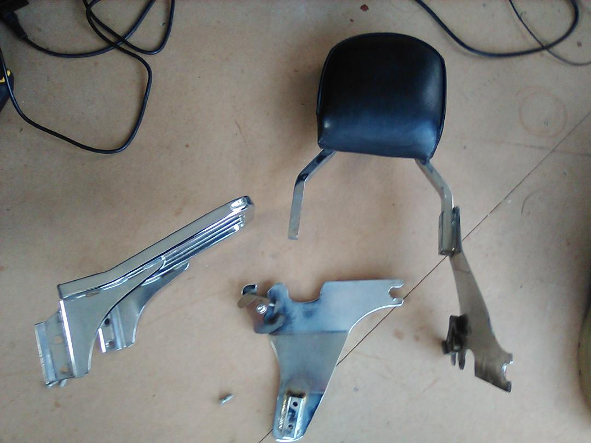
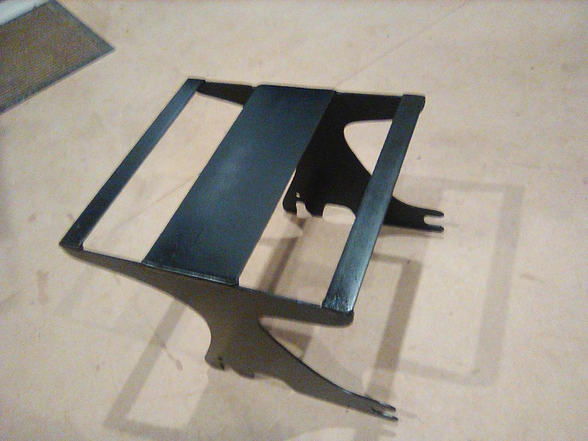
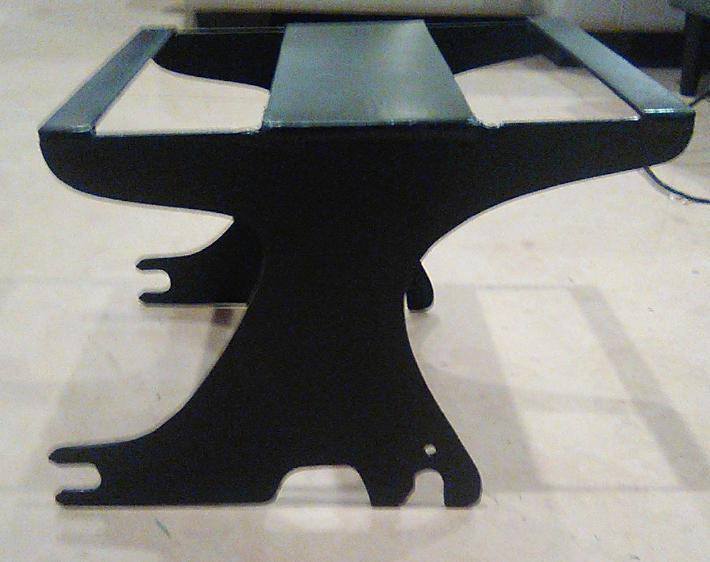
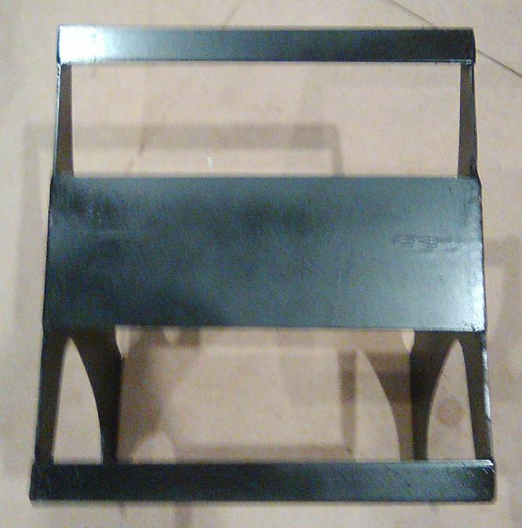
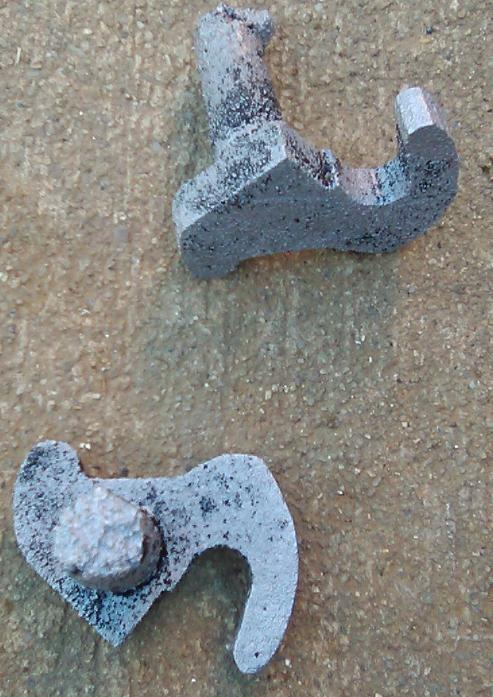
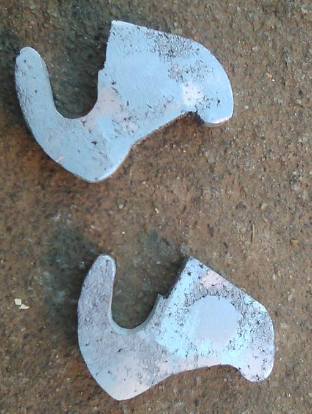
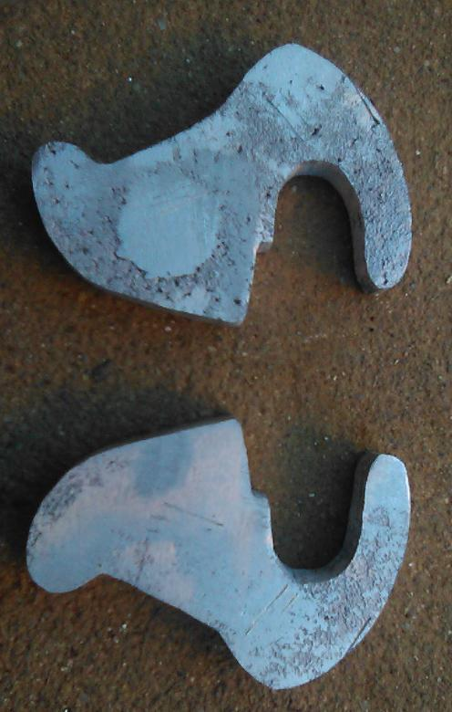
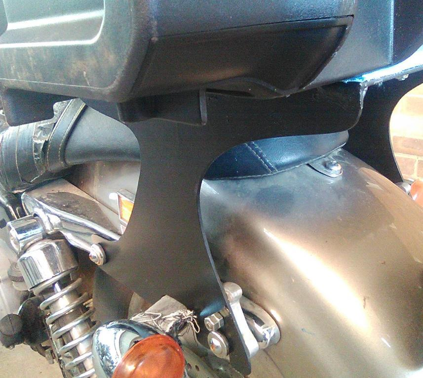
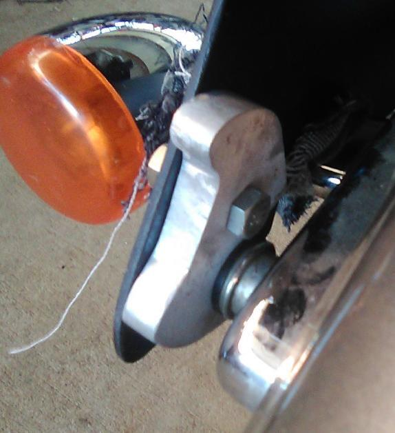
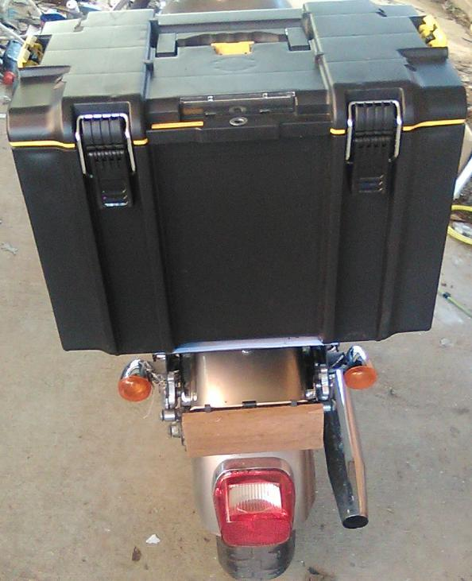

I designed and built a custom luggage rack and box for my Harley to carry tools and fragile items. It needed to be durable, waterproof, and inexpensive - commercial options were not. This page outlines the key elements of the build.
I required a rack and luggage container, of some sort, for my Harley. Commercial products were found to be prohibitively expensive or too small. A plastic toolbox was considered because it is cheap, watertight, and large enough for reasonable loads. My existing pillion backrest and integral luggage rack were not suitable to carry such a box. A solution was sought - and found.
The existing rack was disassembled so that it could be reverse-engineered in order to design a new assembly with a proper fit on the mountings. The rack was constructed from 1/8" gal plate that was salvaged from a crate that had contained a cooling unit for a high performance, special purpose device. It was cut to shape with an angle grinder. 1" x 1/8" steel strip was used for additional reinforcing.
Quick release cam-locks were fitted to the original rack. These were replicated and cast in aluminium, however, the spring-loaded lock mechanism was not considered a sound investment in time and effort. Large-headed self tapping screws were used to lock the cams instead (Removal only occurs when there is a need to remove the seat for servicing or repair.).
Nylon lock-nuts were snugly tentioned onto 3/16" screws that were used to mount a DeWalt ToughSystem 2.0 toolbox on the rack, with metal strips to distribute the force across a larger area. Strips of foam camping mattress were used as a vibration dampener.
An unfortunate incident with a four-pack of Monster Energy drink resulted in additional foam being used as a lining to reduce the impact of vibration on luggage items.

Disassembled commercial backrest and rack prepared for partial reverse engineering.



New mounting with centre of mass moved forward relative to the commercial rack, thus enabling heavier loads to be safely carried. /p>



Cam locks cast from aluminium using a fine, clay-laden sand and polystyrene patterns.


Test fitting: detail of cam Lock engaged on mounting bush with temporary 1/4" bolts. Nylon lock-nuts were later fitted to the final assembly.

Final fitout involved longitudinally splitting some PVC tube and fitting it to edges that might come into contact with chrome fittings. Lock screws were installed to stop the cam locks working loose whilst in transit.